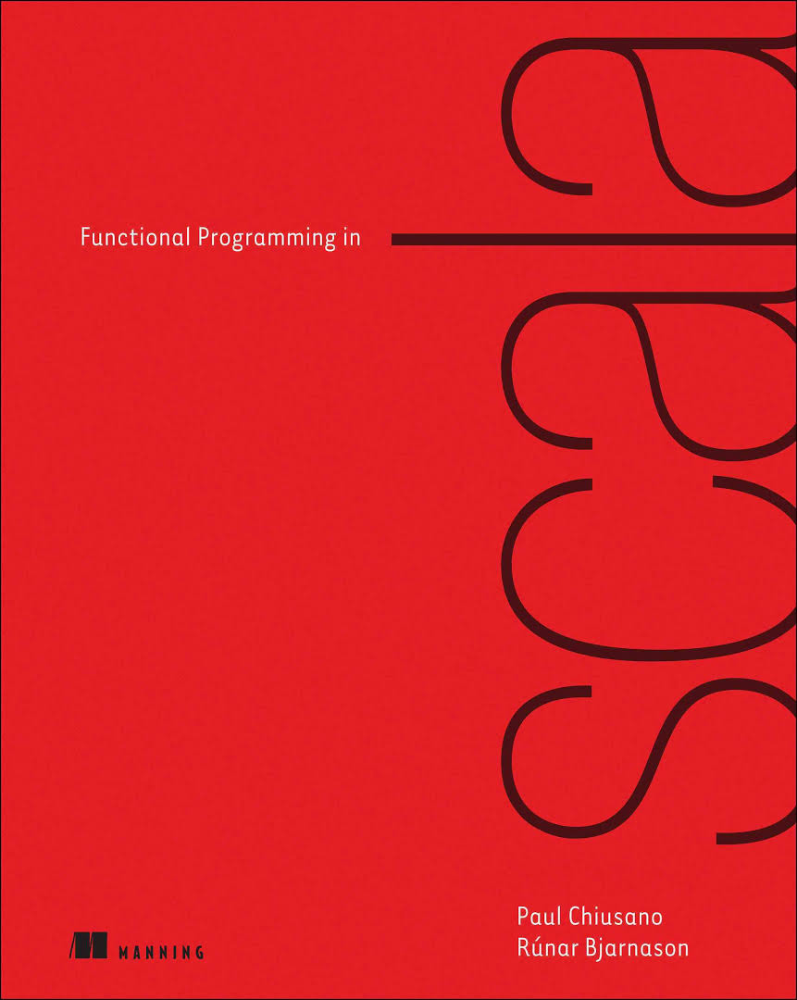
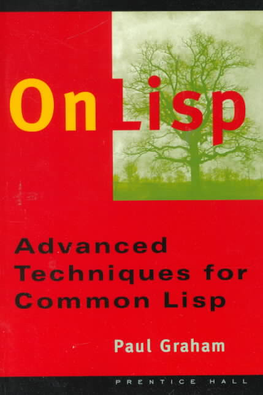
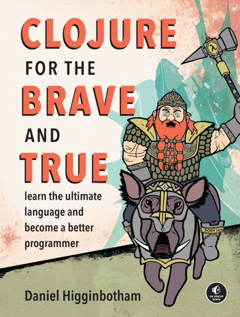

bendavisnc
links
personal
gmail
github
linkedin
resume
tech i'm into
Clojure
Scala
Rx Extensions
d3.js
books i love



talks I've enjoyed
Simple Made Easy - Rich Hickey
Programming with Hand Tools - Tim Ewald
blogs that are way better than mine
Haoyi's Programming Blog
Paul Graham's Essays
adventures in making stuff with Daniel Higginbotham